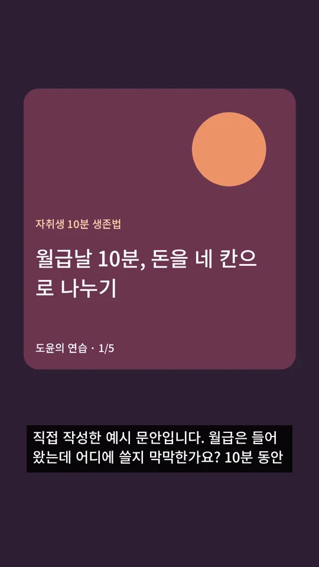
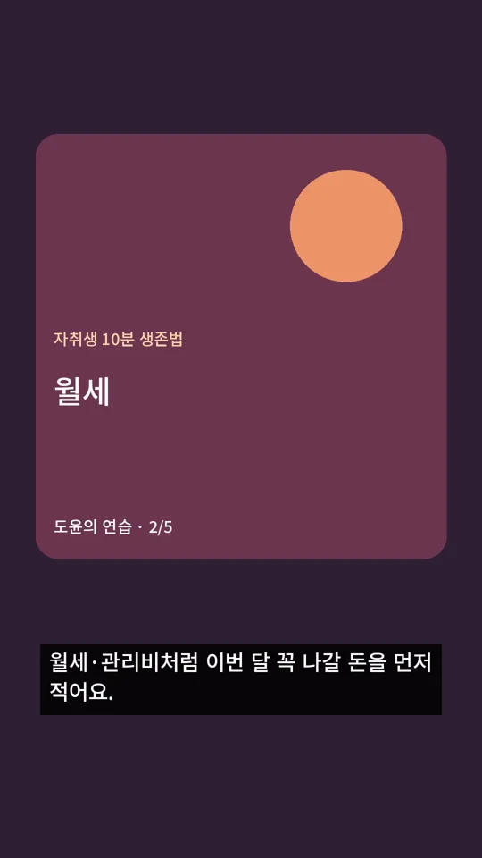
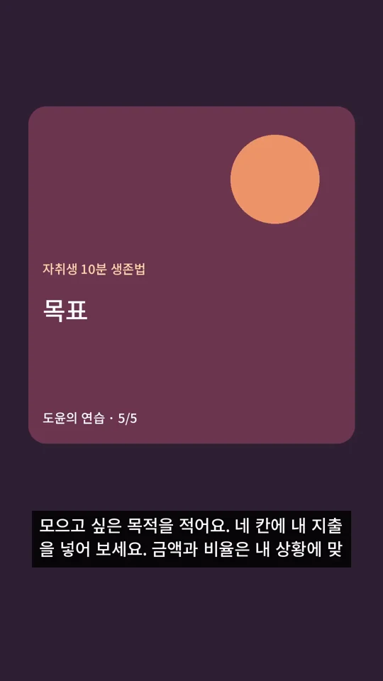

SHORTSBOOK / API AUTOMATION
심화편 · A4
ffmpeg로 쇼츠와 자막 조립하기
이 장에서 만드는 것
세로 MP4·SRT와 실제 규격 검사 기록
2026년 10월 조사 기준 · 도윤·서진·채널·운영 예시는 가상이에요.
키 없이 실행 → 내 자료·키 연결 → private 시험 → 승인제 → 전자동
이 장의 흐름
심화편 전체 목차
먼저 답부터
이미지와 음성만 있어도 ffmpeg로 쇼츠를 만들 수 있어요. 영상 생성 API는 필수가 아니에요.
ffmpeg는 영상·소리를 코드로 조립하는 도구예요. 키트는 pip로 실행 바이너리를 준비하고, 한글은 동봉한 OFL 폰트로 얹어요. 화면 편집기를 열지 않아요.
도윤배경 그림에 한글을 그려 달라고 하나요?
서진그림은 배경만 만들어요. 글자는 폰트로 얹어야 읽기와 수정이 쉬워요.
한눈에 보기
만드는 순서
장면 순서와 음성 길이를 맞춰요
소재 파일 수는 draft.json의 scenes 수와 같아야 해요.
이번 5장면은 01-hook.jpg·02-rent.jpg·03-living.jpg·04-buffer.jpg·05-goal.jpg처럼 파일명 순서로 준비해요. 실제 API가 만든 장면 수가 달라지면 그 수에 맞추세요. media.scenes_dir에는 해당 소재만 모은 폴더를 지정해요.
짧은 생성 클립은 장면 길이만큼 반복될 수 있어요. 반복 동작이 어색한지 전체를 재생하세요. 음성이 장면 시간 합보다 길면 키트가 장면 시간을 늘려요. 문장이 음성과 정확히 맞는지는 직접 듣고 원문 장면을 조절해야 해요.
지금 할 일 장면 파일명·순서·duration을 함께 검토하세요.
파일 자체를 검사해요
미리보기의 모양과 실제 인코딩을 함께 확인하세요.
키트는 1080×1920·30fps H.264/AAC를 만드는 예제예요. 이 해상도·fps는 키트 출력 설정이에요. 일반 채널 Shorts의 분류 조건은 정사각/세로·최대 3분이에요.[A022]
ffprobe가 있으면 JSON으로 검사하고, 없으면 pip ffmpeg에서 영상 정보를 읽어요. 아래 명령은 설치한 검사 함수를 직접 호출해 폭·높이·길이·코덱·LUFS를 보여 줘요. LUFS는 영상 전체가 얼마나 크게 들리는지 비교하는 값이에요.
지금 할 일 아래 검사 후 소리·자막·가림도 휴대폰 크기로 보세요.
한글과 이용 조건을 같이 확인해요
글자가 네모라면 media.font의 파일 경로부터 확인해요.
자막 이미지는 Pillow가 글자를 그리고 ffmpeg가 합쳐요. 이 경로는 libass 자막 필터를 요구하지 않아요. SRT만 고치면 화면에 새 자막이 입혀지지 않으니, 원문·장면 문안을 고쳐 다시 렌더하세요. 키트 Noto Sans KR 폰트와 OFL 안내는 assets/fonts/에 있어요.
무료 폰트·음원·소재의 재배포 권리는 각각 확인해야 해요. ffmpeg는 빌드별 LGPL/GPL 조건을 확인하세요. API 비용이 없는 로컬 조립도 전기·시간·저장 공간은 들어요.[A053][A054]
지금 할 일 직접 보유한 소재와 폰트 라이선스 파일을 함께 보관하세요.

1초 · 첫 질문

8초 · 월세

31초 · 목표
auto-kit 새 mock 실행 → short.mp4의 1·8·31초 프레임 추출 → 540×960 WebP. 연습용 도형·신호음 출력이며 생성 API 이미지가 아닙니다. 아래 영상 전체와 자막 시점도 확인하세요.
해 보기 · 명령 실행
지금 하는 일: 세로 MP4·SRT와 실제 규격 검사 기록을 확인해요.
왜 하는지: 앞 단계의 실제 파일과 상태를 읽어 다음 작업을 이어 가기 위해서예요.
아래 명령은 auto-kit 폴더에서 실행하세요. A0에서 가상환경을 먼저 준비해요. RUN_ID가 있으면 앞 명령이 출력한 실제 12자리 ID로 바꿔요. Windows와 macOS는 같은 Python 명령을 써요.
python -c "from pathlib import Path; import json; from rendering.media import probe_media; print(json.dumps(probe_media(next(Path('private/state').glob('*/short.mp4'))),ensure_ascii=False,indent=2))"python -c "from pathlib import Path; import json; from rendering.media import probe_media; print(json.dumps(probe_media(next(Path('private/state').glob('*/short.mp4'))),ensure_ascii=False,indent=2))"이렇게 보이면?
| 표시·오류 메시지 | 해결 |
|---|---|
| 소재 파일 수와 장면 수를 맞추세요. | 폴더 안 파일명 순서와 scenes 수를 맞추세요. 다른 그림이 섞이지 않게 해요. |
| 음량 LUFS 기본 범위 밖(무음 포함) | 무음·깨진 녹음을 확인하고 전체를 들어요. 기본 음량 기준은 A6에서 확인해요. |
| ffmpeg 처리 실패. 파일·코덱·폰트·저장 공간을 확인하세요. | doctor를 실행하고 media.font·원본 파일·남은 공간을 차례로 확인해요. |
비용과 확인할 점
자주 묻는 질문 5개
이미지 속 한글을 직접 만들까요?
배경과 자막을 분리하세요.
예: 월세 글자는 폰트로 얹고 그림은 배경만 쓰세요. 관련 절로 →
이미지 6장과 음성에 영상 API가 필요한가요?
필수는 아니에요.
본인 대본의 장면 수에 맞춰 이미지·음성을 준비하고 ffmpeg로 조립하세요. 관련 절로 →
ffmpeg 설치와 자막 네모는요?
pip 바이너리 설치와 폰트 경로부터 확인해요.
A0의 설치 후 doctor를 실행하고 media.font 파일을 보세요. 관련 절로 →
규격은 어떻게 확인하나요?
아래 검사로 실제 파일 정보를 읽어요.
1080×1920·36초 샘플을 확인하고 내 출력도 같은 방법으로 보세요. 관련 절로 →
핵심 정리 3줄
- 영상 생성 API 없이도 이미지·음성으로 조립돼요.
- 자막은 장면 시간 배분이므로 발음·시점을 직접 확인해요.
- 실제 규격·음량·권리 기록을 함께 남겨요.